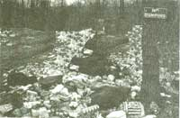
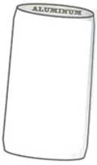
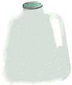
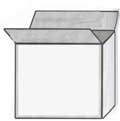
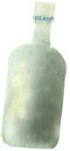
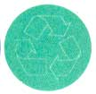

ENERGY AND ENVIRONMENT
A once-thriving movement is beginning to lose its momentum, and our nation's mineral
resources hang in the balance.
You've heard the old saw too many times already: "Americans have been conditioned to accept a throwaway lifestyle." In the brief flurry of environmental enthusiasm of the first few years of the decade, many recognized that statement, however overused, to be true, and the recycling boom was born. An encouraging start found it difficult to stand the test of years, and paper, plastic, and metal recycling rates have begun to level off. It's disappointing, but not surprising. The regimen of separating, bundling, and disposing is made even more complicated by collection ordinances that often defy understanding. Consumers have little incentive to recycle because just how the external cost of packaging is reflected in market prices is not always clear to us. And often, market prices don't reflect dwindling mineral supplies. Because of government funding to mining companies, consumers have no incentive to reduce demand soon enough to avoid economic depletion of minerals.
Mining and energy industries get large tax breaks, depletion allowances, and other tax-supported federal subsidies. These subsidies encourage mining and energy industries to get virgin resources out of the ground as quickly as possible. Low mineral prices-supported by government funding-fail to include external costs of mining and processing; encourage resource waste, faster depletion, and more pollution and environmental degradation.
By contrast, recycling industries get few tax breaks and other subsidies. Actually, the lack of large, steady markets for recycled materials also makes recycling a risky business. It becomes a financial venture that attracts little investment capital. But the battle continues.
Consumers in the United States throw away enough aluminum to rebuild the country’s airline fleet every three months. Despite a growing market trend towards recycling one particular aluminum product, the can, the vast majority of this resource is still wasted. And what’s more, the U.S. has virtually no reserves should a sudden military or industrial need present itself. Our aluminum is currently imported largely from Jamaica and Australia because it is simply consumed more rapidly than domestic supplies can keep up with. Additionally, Other countries have higher-grad ore deposits that are cheaper to extract than lower-grade U.S. reserves.
Plastics are made from petroleum and natural gas. They account for about 7 percent of the weight of municipal solid waste in the United States. They are the fastest-growing type of waste by weight in landfills. Most plastics used today are either virtually nonbiodegradable or take some 200 to 400 years to degrade in landfills.
Despite what you may have heard, only 1 percent of all plastic wastes and 4 percent of plastic packaging is recycled. Many plastic products today carry a label saying they are biodegradable or recyclable. While his statement is technically true, it is also highly misleading. Plastics degrade very slowly in landfills, and 99 percent of all plastic waste is not recycled.
The plastics industry runs ads promoting plastics as recyclable. However, the main purpose of the ads is to keep us buying more plastics. The best solution is to simply use much less plastic in the first place, especially throwaway items.
Each year the average American consumes 600 pounds of paper. Recycling that one-third of a ton of cardboard, boxboard, and newspaper saves forests, lessens solid waste, and reduces water and air pollution. Conservationists estimate that at least 50 percent of the world's wastepaper (mostly newspapers, cardboard, office paper, and computer/copier paper) could be recycled by the end of this century. Currently only about 25 percent is recycled in the United States, the world's foremost paper consumer. And that 50 percent mark is definitely obtainable. During World War II, when paper drives and recycling were national priorities, the U.S. recycled 45 percent of its wastepaper.
Glass is made chiefly form silica sand (silica, or silicon dioxide), soda ash (sodium carbonate), and limestone (calcium carbonate). In order to make glass, the glassmaker mixes and fires a large amount of silica sand and small amounts of soda ash, limestone, and other materials. These other materials may be alumina (aluminum oxide), salt cake (sodium sulfate), or lead oxide. The mixture is heated to 2,600 to 2,900 degrees Fahrenheit. When the liquid mass cools, the final product holds our soda.
Be careful if you've been under the impression that those color-coded arrows chasing arrows in a triangle have some kind of verifiably consistent meaning. The use of recycling logos is unregulated, and, as more and more polls indicate a consumer preference for "environmentally friendly" products, the logos may be becoming as much a marketing tool as any kind of meaningful indicator of information.
Some manufacturers use color-coded recycling logos to indicate different percentages of recycled product contents. The paper industry, for example, generally uses white arrows to indicate 100 percent recycled paper products and black arrows for products that contain some recycled material. But you will only know how much recycled material any product contains if the manufacturer includes a legend indicating the percentage along with the logo. The legend, however, is not required by law.
In 1992, the Federal Trade Commission issued a set of guidelines for labeling and advertising "recycled," "recyclable," "degradable," and "environmentally friendly" products. The FTC claims the guidelines will help prevent false or misleading labeling. However, they are legally unenforceable, so look for the legend.
Recycling or resource recovery, and reuse require less energy and cause less pollution and land disruption than use of virgin resources. They cut waste disposal costs and prolong the life of landfill by reducing the volume of waste.
Recyclable aluminum includes aluminum cans, aluminum foil, aluminum pie tins, and cooling pans. Be sure to empty and rinse containers. Keep separate from other recyclable materials. Aluminum can be flattened to save space.
Cardboard includes cardboard boxes and inserts or dividers used for packaging. If everyone in the country recycled their Sunday newspaper, we would save an entire forest of 500,000 trees each week. Reconstituted, cleaned, combined with virgin fibers, and reformed into new newsprint, newspaper has different grades and mixing them will complicate the recycling process. No books, magazines, glossy paper, or metal objects. NOTE: Colored inserts are okay unless they are glossy. Keep dry, clean. and separate from other recyclables.
Cardboard is baled, made into pulp, and cleaned before being pressed anew. It's important to remember that contaminants (oils, grease, and food residues) make cardboard or boxboard unfit for recycling, and that boxboard contaminates cardboard and vice versa.
Cereal, pancake, dinner mix, and cracker boxes, paper orange juice and milk containers. Poly-coated boxboard is also recyclable. Keep separate from other recyclable materials.
There are three types of glass: clear, brown, and green. Separate your glass by color. Keep in mind that the weight of glass makes recycling expensive and some recyclers won't accept it. Since recycled glass is remelted and formed into new containers; you must separate it by colors: clear, brown, and green.
Most commonly, canned goods are packaged in steel, and so are containers for shoe polish, car and floor wax, seasonings, tools, kitchen utensils, throat lozenge containers, staples, and paper clips. Steel containers are also called "tin" or "bimetal" cans. Returned steel is then compacted and shredded. If you are unsure of a container's material, grab a magnet from the fridge. If the magnet sticks, recycle as steel. If not, it is probably aluminum. Empty and rinse steel cans prior to disposal. Remove labels, ends, and flatten to save space (optional).
Plastics vary according to code numbers. Normally recyclers accept number one, two, and six. Be sure you only buy code numbers that are accepted by your recycler. Plastic returned to recyclers is compacted by number code, washed, shredded, pelletized, and reformed to new plastic containers. Empty and rinse containers prior to disposal, and remember to remove the lids. Check the code number on the bottom and sort by number. Keep separate or tie by the handles.
1. Soda bottles, small bottled water bottles, cooking oil containers, dishwashing soap
2. One-gallon milk containers, dishwashing soap containers, large condiment containers, vinegar containers, bleach bottles, cleaning fluids, yogurt containers
3. Barbecue sauce containers
4. Waterproof bags placed on newspapers
6. Polystyrene; egg cartons, meat containers, cottage cheese containers, take-out containers
Manufacturers of our depleting resources claim there is no demand for more environmentally sound methods of packaging their products. To prove otherwise, readers should write to manufacturers of the products that do not use recyclable packaging and ask them to use packaging that is recyclable.
But don't stop there. Governments need to hear the same message. An example of the government working for us is the British Columbia paper mills. British Columbia mills soon will be producing chlorine-free pulp, not because papermakers want it, but because the Canadian government demanded it!
|
 PAM SPAULDING/POSITIVE IMAGES |
 |
 |
|
 |
 |
 |